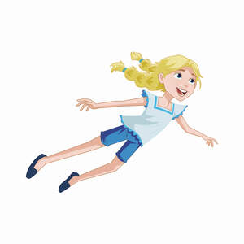
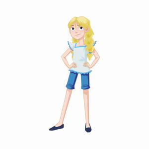

Trade Mark Journal No.2025/020 16 May 2025
UK00004168437 4 March 2025 (9,16,25,28,35,36,41)
Mark 1

Mark 2

- Class 9
- Electronic book reader; audio books in the nature of namely, fiction books on a variety of topics, non-fiction books in the fields of crime, thrillers, poetry, drama, romance, film, cinema, screenplays, children's books; e-books featuring fiction books on a variety of topics, non-fiction books in the fields of crime, thrillers, poetry, drama, romance, film, cinema, screenplays, children's books recorded on computer media; downloadable electronic publications in the nature of in the nature of magazines in the field of book publications and new book releases; weekly publications, namely, magazines, newsletters, newspapers, brochures, and catalogues in the field of book publications and new book releases downloaded in electronic form from the internet; downloadable information in the nature of booklets, leaflets, magazines, journals and articles in the field of games and gaming; downloadable computer software for publishing books and films downloadable children's educational software; downloadable computer software for monitoring the use of computers and the internet by children; downloadable computer game software; downloadable video game software; downloadable interactive multimedia computer game programs; audio speakers; computer keyboards; computer mouse; mouse pads; drawing apparatus and instructions adapted for use with computers, namely, drawing tablets being computer input devices; blank audio discs; children's eyeglasses; cases for children's eyeglasses; science teaching apparatus for children being toy chemistry sets; joysticks for use with computers, other than for video games; magnets; fridge magnets; decorative magnets; downloadable computer graphics software; downloadable computer game software; downloadable electronic game programs; computer software platforms, downloadable computer games software for use with on-line interactive games; computer games programmes downloadable via the internet; downloadable interactive multimedia computer game programs; headsets for virtual reality games; film recording apparatus; film reproducing apparatus; motion picture films featuring children's entertainment; downloadable films and television programs featuring children's entertainment provided via a video-on-demand service; recorded computer software and computer hardware sold as a unit for use in language localization by means of language translation, subtitling, dubbing, closed captioning, and teletext for feature films, television programs, videos, and digital media in general.
- Class 16
- Paper and cardboard; printed photographs; stationery; adhesives for stationery or household purposes; artists' and drawing materials, namely, artists' pens and drawing pens; paintbrushes; fiction and non-fiction books; pens; pencils; colored pencils; drawing pencils; ballpoint pens; rollerball pens; felt-tip pens; gel roller pens; colored pens; drawing pens; highlighting pens; pen and pencil boxes; pen and pencil holders; party stationery; paper party bags; cases for pens and pencils; pen holders; pencil erasers; pencils for drawing; crayons; modelling clay; stands for pencils; printed books in the field of adventure, travel, crime, music, children's books, romance books ; printed books for children; printed children's books incorporating an audio component; printed note books; printed picture books; scrap books; sketch books; printed children's activity books; printed children's bath books; printed birthday books; printed calendars; printed gift and holiday cards; printed greeting cards; printed birthday card; blank note cards; printed invitation cards; boxes, cartons, storage containers, and packaging containers made of cardboard; badges made of cardboard; cardboard labels; printed musical greeting cards; printed colouring books; printed comic books; printed comic books for children; printed cookery books; drawing books; series of printed fiction books; printed flip books; printed recipe books; printed story books; printed baby books; memory books; printed children's pop-up books; printed booklets in the field of games; printed magazines featuring video and computer games; stickers; albums for stickers; sticker books; paper badges; desk mats; arts and craft paint kits; painting sets for children; children's paint boxes for use in schools; printed stories in illustrated form; marking stamps; collectors albums being scrapbook albums; printed diaries; artists' brushes; watercolor painting palettes; chalks; chalk boards; paint boxes for use in schools; children's slates being slate boards for writing; calendar-finished paper; series of printed non-fiction books in the field of gardening; printed crossword puzzles.
- Class 25
- Clothing, namely, outwear and base layers; footwear; headwear; casual clothing, namely, shirts and sweatshirts; waterproof clothing, namely, pants, sweatshirts, jackets and coats; rainwear ; sportswear being football tshirts, marathon t-shirts; casual shirts; casual trousers; tops as clothing; hooded jumpers in the nature of sweaters; hooded pullovers; combinations being one-piece undergarments; ; jerseys being clothing; ; jackets being clothing; knitwear, namely, jumpers, sweatshirts, t-shirts; baby grows for babies; hats; pom-pom hats; tops as clothing for children; children's headwear; children's footwear; hats for children; sun hats being beach hats; fashion hats; cap peaks; sports caps; caps with visors; baseball caps; tank-tops; T-shirts; graphic T-shirts; long-sleeved T-shirts; short-sleeved T-shirts; printed T-shirts; hoods; hooded sweat shirts; sweatshirts; jogging suits; cloth bibs; raincoats; aprons; sleepwear; pajamas; one piece garment for infants and toddlers; swimming caps; swimwear and swimming costumes; clothing belts; scarves; gloves; mittens; braces for clothing; underwear; ponchos; body warmers being puffer vests; gilets; socks; boots; shoes; training shoes; sandals; booties; slippers; flip flops for use as footwear; slipper socks; maternity clothing, namely, shirts, dresses, jumpers, sweatshirts.
- Class 28
- Board games; fidget toys; facemasks being playthings; plastic character toys; playing cards; card games; soft sculpture dolls; soft sculpture toys; cuddly toys being toy stuffed animals; infants' toys; plush toys; squeeze toys; stacking toys; multiple activity toys for children; toy animals; toy bakeware; toy figures; dolls; games relating to fictional characters being memory games; clothes for dolls; doll accessories; paper party and wedding favors; hand-held party poppers; party games; party novelties being novelty noisemaker toys for parties; trivia games played with cards and game components; toy aeroplanes; scale model buildings; molded toy figures; Christmas crackers; toy cutlery; toy dishes; toy flowers; toy food; toy rockets; bean bag toys; children's educational toys for cognitive development; electronic games for the teaching of children; toy trains and parts and accessories therefor; toy model train sets; action figure toys; balls for games; balls for juggling; bath toys; bobblehead dolls; building games; carnival masks; children's multiple activity tables; costume masks; theatrical masks; jigsaw puzzles; puppets; hand puppets; finger puppets; teddy bears; stuffed toy bears; balloons; bathtub toys; electronic games other than those adapted for use with television receivers only.
- Class 35
- Advertising and advertisement services; business management; business administration; providing office functions; hospital management; advertising services to promote public awareness of medical conditions; marketing consulting, namely, development of marketing campaigns for others; market research; retail and online retail store services connected with the sale of compact discs, DVDs and other digital recording media, mechanisms for coin- operated apparatus; retail and online retail store services connected with the sale of computer software, pre- recorded CD-ROMs, pre-recorded DVDs, pre-recorded videos, audio recordings, audio and video tapes and cassettes; retail and online retail store services connected with the sale of e-book readers, audio books, talking books, e-books, downloadable e-books, electronic publications, downloadable information relating to games and gaming; retail and online retail store services connected with the sale of headsets for virtual reality games, virtual reality games software, computer games software for use with video game consoles, pre-recorded DVDs featuring games, pre-recorded audio tapes, video tapes and compact discs featuring games, computer games entertainment software; retail and online retail store services connected with the sale of computer games for playing, computer programs for pre-recorded games, cinematographic film, film recording apparatus, film reproducing apparatus, motion picture films featuring children's entertainment, downloadable films and television programs featuring children's entertainment provided via a video-on-demand service, recorded computer software and computer hardware sold as a unit for use in language localization by means of language translation, subtitling, dubbing, closed captioning, and teletext for feature films, television programs, videos, and digital media in general, precious metals and their alloys, jewellery, precious and semi-precious stones, horological and chronometric instruments, bracelets, charity bracelets, brooches, chains, charms, charms for necklaces, cuff links; retail and online retail store services connected with the sale of crosses, decorative pins, digital watches, jewellery boxes, jewellery for children, watches, wristwatches, watches containing a game function, children's jewellery; retail and online retail store services connected with the sale of statues, figurines and ornamental figurines, made of or coated with precious or semi- precious metals or stones, or imitations thereof, model animals made of or coated with precious or semi-precious metals or stone, ornaments for clothing, tie pins, cufflinks, boxes for cufflinks, lockets, necklaces, pins; retail and online retail store services connected with the sale of lanyards, lanyards for holding keys, automatic watches, key rings, charms for key rings, key rings of leather, key rings of metal, key rings of plastic, charms for key chains, key chains of leather, key chains of metal, key chains of plastic; retail and online retail store services connected with the sale of key chain tags, non-metal key chains, plastic key chains, key chains, key rings, paper and cardboard, printed matter, bookbinding material, photographs, stationery and office requisites, except furniture, adhesives for stationery or household purposes; retail and online retail store services connected with the sale of artists' and drawing materials, paintbrushes, instructional and teaching materials, printers' type, printing blocks, books, pens, pencils, colored pencils, drawing pencils, ballpoint pens, rollerball pens; retail and online retail store services connected with the sale of felt-tip pens, gel roller pens, colored pens, drawing pens, highlighting pens, pen and pencil boxes, pen and pencil holders, party stationery, paper party bags, cases for pens and pencils, pen holders, pencil erasers; retail and online retail store services connected with the sale of pencils for drawing, crayons, modelling clay, stands for pencils, printed books, educational books, books for children, children's books incorporating an audio component, note books, picture books, scrap books, sketch books; retail and online retail store services connected with the sale of children's activity books, book holders, bath books, birthday books, calendars, cards, greeting cards, birthday cards, blank cards, invitation cards, cardboard containers, boxes, packaging; retail and online retail store services connected with the sale of badges and labels, musical greeting cards, colouring books, comic books, children's comics, cookery books, drawing books, fiction books, flip books, recipe books, story books, baby books; retail and online retail store services connected with the sale of coffee table books, memory books, non-fiction books, pop-up books, series of fiction books, booklets relating to games, magazines featuring video and computer games, stickers, albums for stickers, sticker books, paper badges, desk mats; retail and online retail store services connected with the sale of craft kits for painting, toy putty, memory books, painting sets for children, children's paint boxes, printed stories in illustrated form, newsletters, printed educational materials, paper teaching materials, printed publications relating health and medical matters, printed publications relating to games; retail and online retail store services connected with the sale of newsletters in the field of games and gaming, strategy guide book for computer games, magazines featuring video and computer games, rule books for playing games, photo albums, stamps, marking stamps, collectors albums, arts, crafts and modelling equipment, printed diaries; retail and online retail store services connected with the sale of artist brushes, watercolors, chalks, chalk boards, paint boxes, children's slates, calendar finished paper, books on gardening, crossword puzzles, leather and imitations of leather, animal skins and hides, luggage and carrying bags; retail and online retail store services connected with the sale of school book bags, reusable shopping bags, umbrellas, overnight bags, toiletry bags, travel bags, tote bags, bags for umbrellas, umbrellas for children, children's shoulder bags, bags for clothes; retail and online retail store services connected with the sale of purses, card wallets, carrying cases, grocery tote bags, key cases, rucksacks, school backpacks, weekend bags, printed canvas bags, household or kitchen utensils and containers, combs and sponges; retail and online retail store services connected with the sale of brushes, except paintbrushes, brush-making materials, articles for cleaning purposes, unworked or semi-worked glass, except building glass, glassware, porcelain and earthenware, kitchen utensils, mugs, ceramic mugs, coffee mugs; retail and online retail store services connected with the sale of insulated mugs, coffee travel mugs, mugs made of china, mugs made of plastic, mugs made of earthenware, mugs of porcelain, cups, egg cups, bottles, water bottles, plastic water bottles, empty; retail and online retail store services connected with the sale of reusable plastic water bottles, water bottles sold empty, reusable plastic water bottles, empty, reusable stainless steel water bottles, coasters made of cork, coasters made of rubber, coasters, not of paper or textile, biscuit stamps, cookie stamps, insulated travel mugs; retail and online retail store services connected with the sale of bath sponges, hairbrushes, toothbrushes, drinking straws, children's potties, training cups for babies and children, feeding cups for children, plastic bathtubs for children, lunchboxes, ceramic coin boxes, ceramic figurines, ceramic ornaments; retail and online retail store services connected with the sale of fiberglass figurines, model figures made of glass, plastic buckets for storing bath toys, money boxes, not of metal, non-metal piggy banks, souvenir plates, clothes-pins and pegs, baking utensils, cooking utensils, plates, commemorative plates; retail and online retail store services connected with the sale of cutlery trays, candlesticks, candle holders, gardening gloves, textiles and substitutes for textiles, household linen, curtains of textile or plastic, bed linen and table linen, household textiles, towels, not of paper; retail and online retail store services connected with the sale of hooded towels, textile towels, kitchen towels of textile, children's blankets, children's bed sheets, children's bed linen, children's towels, tea towels, dish towels for drying, fabrics in kit form for making toy monsters; retail and online retail store services connected with the sale of clothing, footwear, headgear, casual clothing, waterproof clothing, rainwear, sportswear, articles of thermal clothing, casual trousers, tops; retail and online retail store services connected with the sale of hooded jumpers, hooded pullovers, combinations, jerseys, jackets, knitwear, baby clothes, children's clothing, children's headwear, children's footwear; retail and online retail store services connected with the sale of tank-tops, jogging suits, cloth bibs, raincoats, aprons, sleepwear, pajamas, one piece garment for infants and toddlers; retail and online retail store services connected with the sale of swimming caps, swimwear and costumes, belts, scarves, braces, underwear, ponchos, body warmers, gilet warmers; retail and online retail store services connected with the sale of socks, boots, shoes, trainers, sandals, booties, slippers, flip flops, slipper socks, maternity clothing, ties; retail and online retail store services connected with the sale of games, toys and playthings, video game apparatus, gymnastic and sporting articles, decorations for Christmas trees, toys, children's toys, plastic toys, playing cards, card games; retail and online retail store services connected with the sale of soft dolls, soft toys, cuddly toys, infants' toys, plush toys, squeeze toys, stacking toys, multiple activity toys for children, toy animals, toy bakeware, toy figures; retail and online retail store services connected with the sale of scale model buildings, molded toy figures, Christmas crackers, toy cutlery, toy dishware, toy flowers, toy food, toy rockets, bean bag toys; business services, namely, developing fundraising campaigns for others; providing information, advice, and consultation services in the fields of advertising and advertisement services, business management, business administration, providing office functions, hospital management, advertising services to promote public awareness of medical conditions, marketing consulting, namely, development of marketing campaigns for others, market research, developing fundraising campaigns for others, and retail and online retail store services.
- Class 36
- Fundraising services by means of organizing, arranging and conducting fundraising programs for the benefit of hospitals; charitable services, namely, fundraising services by means of organizing educational events in the nature of workshops, classes and in the field of medical care for children; charitable services, namely, fundraising services by means of organizing live entertainment events in the nature of live music events, sporting events and activities for helping children in need of medical care .
- Class 41
- Provision of educational courses in the field of healthcare; entertainment services, namely, hosting galas, fundraising events, sports events for charitable fundraising in the field of healthcare; educational services, namely, conducting conferences, workshops and seminars in the fields of medical services, health, health care, medical diagnosis, illness or sickness; video production; production of radio and television programs; publishing of books, texts, leaflets, reports, newspapers, calendars, newsletters and magazines; providing online non-downloadable electronic publications in the nature of books, leaflets, newspapers and magazines in the field of healthcare; organizing, arranging and conducting walking, running, triathlon, climbing, trekking, cycling, skydiving, baking and art events, the proceeds of which are donated to charity; organization of entertainment events in the nature of live music events, theatre performances and galas; organizing of recreational events, namely, hosting galas, fundraising events, sports events for charitable fundraising; organizing, arranging, and conducting walking, running, triathlon, climbing, trekking, cycling, skydiving, baking and art events; organization of social entertainment events; organizing arts events; organization of sporting events and competitions, namely, walking, running, triathlon, climbing, trekking, cycling, skydiving competitions; organizing events in the field of healthcare for educational purposes; educational services, namely, conducting conferences and exhibitions for the benefit of seriously ill children in the field of healthcare.
Great Ormond Street Hospital Children’s Charity
Representative: Stobbs